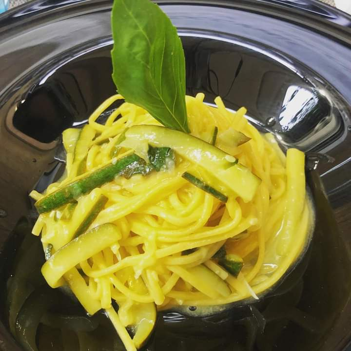
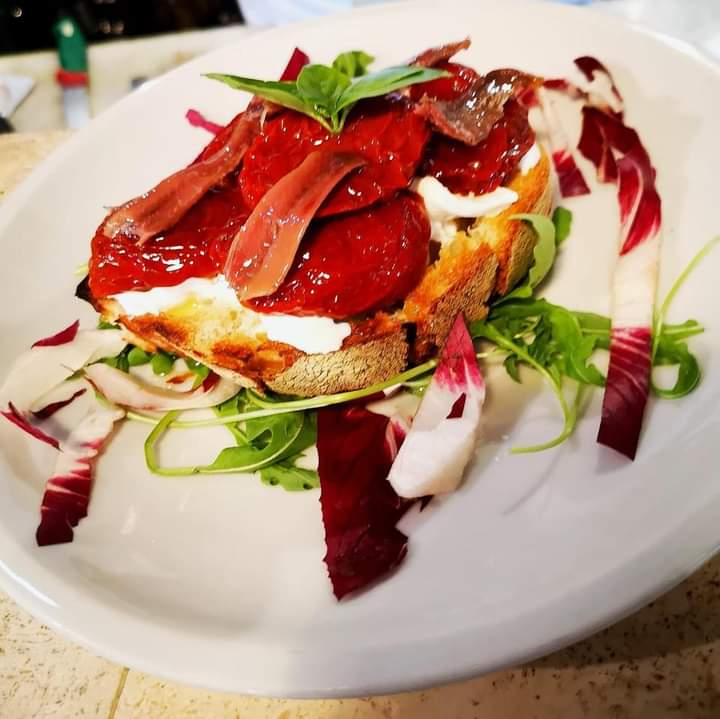

Atmosfera Rilassata
Perfetto per famiglia e amici
L'ambiente tranquillo rende questo locale perfetto sia per una cena in famiglia sia per una serata da trascorrere in compagnia dei propri amici.


